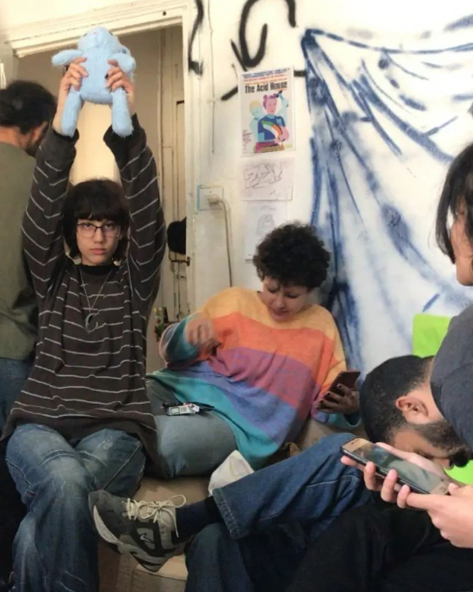
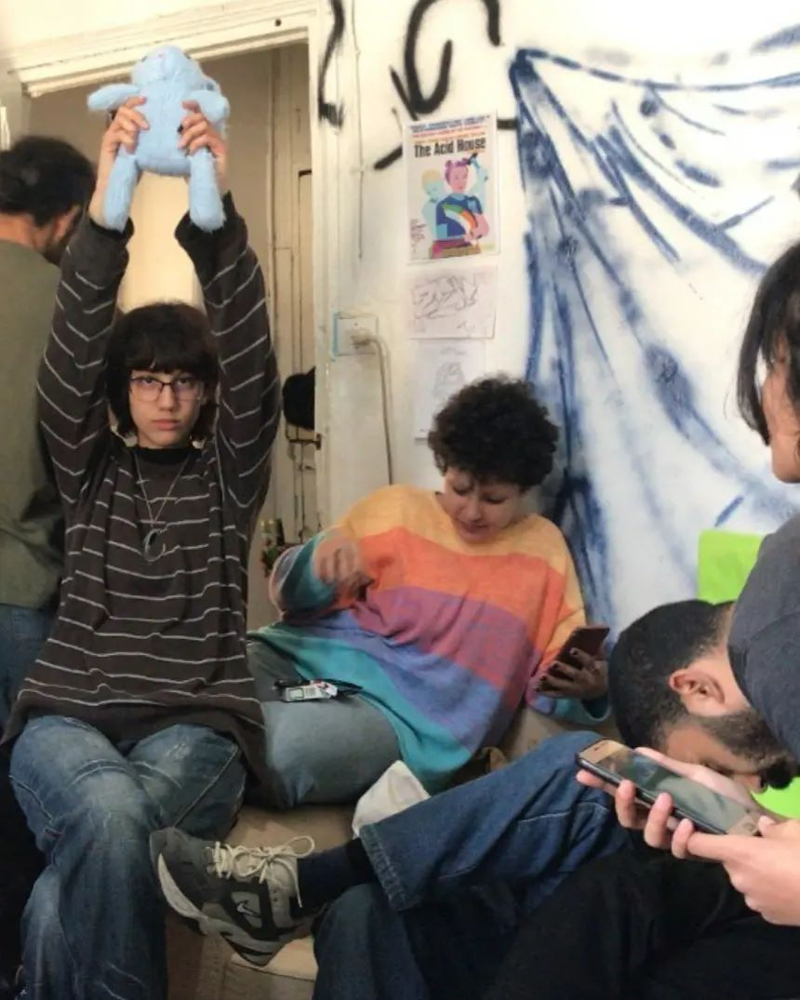

BY PATRICK SULLIVAN A.K.A THE PRIEST
Like millions of kids born in the 80s, music was my primary form of escapism.
I was a teenager in the 90’s neo-liberal capitalist city of Johannesburg, and at around the age of fourteen snuck out to my first rave to thunder
the night away with friends in an abandoned factory on Jeppe Street. The sweat, neon, pacifiers, psychedelics, stimulants, cuddle puddles,
chill rooms and sambuca laced jelly mixed with electronic beats was an intoxicating escape.
Outside, the streets burned with protest and post-apartheid South Africa teetered on the brink of a civil war.
These grassroots, anti-establishment and unlicensed raves were a response to cultural tensions exactly like the ones we face today and an up yours to the conservative establishment of the time.
Out of these pre-internet subcultures across the US, Africa and Europe,
mushroomed secret flyers, musical innovation, social identity, experimental fashion and alternative cultural production.
Raving became a celebration of a childlike existence, of independence and connection, of solidarity and socializing,
embracing a utopian society which only existed in our heads.
Inevitably, Raves in their original form become commodified, were commercially hijacked and heard in branded parties, posh up-scale restaurants, bourgeoise spin classes and mass video games,
departing significantly from their original form and function. Fortunately, instead of eliminating rave culture, which merged with contemporary club culture,
the social movement split into various underground subcultures and spread beyond late night parties into an alternative lifestyle resurrected underground through art, cultural production and chat rooms.
It was these offshoots which re-established the authenticity, ethos and social organization of the original D-I-Y rave culture.
One of the most defining and arguably important subcultures emerging out of this 20th century rave scene was the cultural phenomenon called Gabber.

 

In the mid to late 90’s the movement was commercialized by ID&T, a large Dutch entertainment company and soon DJ’s became international celebrities. By 2000 fashionistas were battered with jackhammer Gabber in a Raf Simons SS00 runway show in Paris. The culture imploded and people began to associate “gabbas” with parodies like Hakkuhbar and Gabba Piet which were blasted across television screens and mainstream media. This turned Gabber culture into a caricature. The media began to spin stories about hooligans and nihilism, youth addicted to fantasy lives based on diets of violent video games, horror films and drugs. The rise of neo-fascist groups and politicized Gabbers altered the aesthetic, style and subculture’s original principles of friendship, empathy, inclusivity and community. Skinheads, boot boys and hooligans became the media’s poster boys of the Gabber scene, a far cry from the original ravers of the early 90’s. I wanted to speak to a original 90’s Gabber, someone who has performed heavy kicks whilst having his ears jack-hammered by heavy beats. I tracked down Alberto Guerrini, also known as Gabberelaganza, a cultural leader of Gabber, a polymath artist, activist and anarchist behind the colorful gabbereleganza Tumblr and zine Gabber, in the Name of Love. Gabbereleganza’s glorious Tumblr archive launched in 2011, which started out as a way to collate the lost photographs and artworks from the Gabber scene has been described as “one of the internet’s most informative and abundant research vaults of dancefloor memorialization”.
he scene never disappeared, it got smaller and moved underground for Gabbers who took on the traditional style and codes of conduct and were devoted to dance, with friends - and Progressive Gabba or Soul Hardcore was born. This resulted in a new generation that grew up with Gabber 2.0 and its myriad hardstyle cousins, speedcore, terrorcore, Frenchcore and happy hardcore all cultivating alternative sounds and audiences, while all the while sounding alien to outsiders.